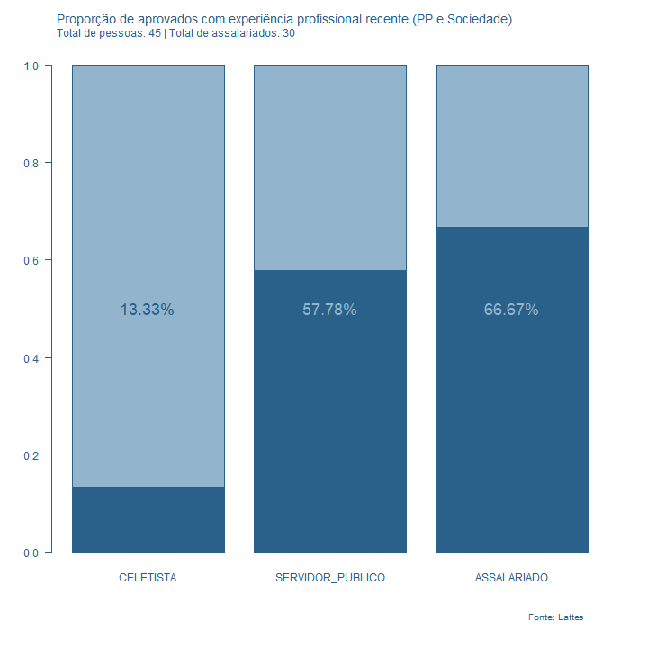
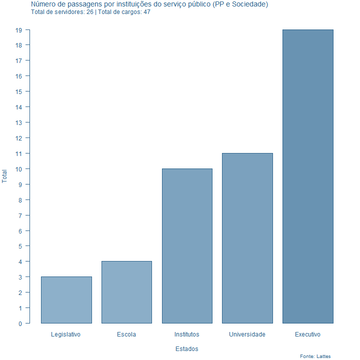
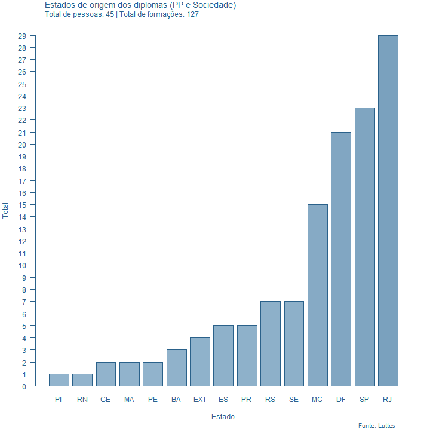
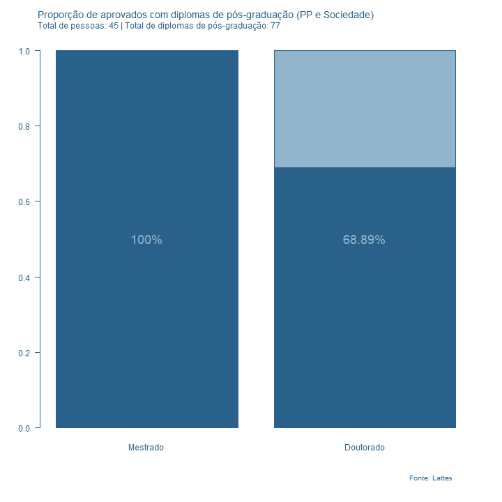
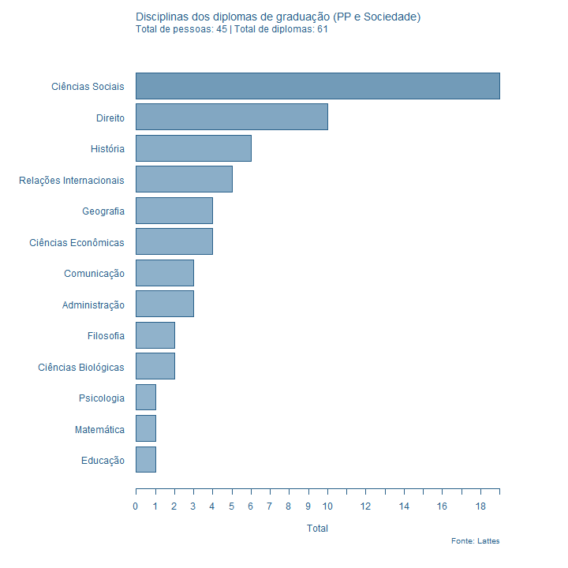
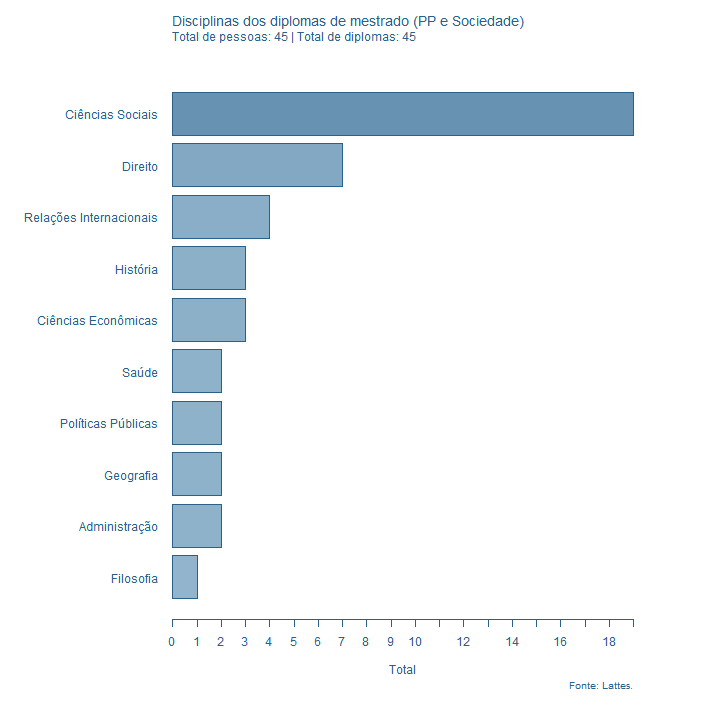
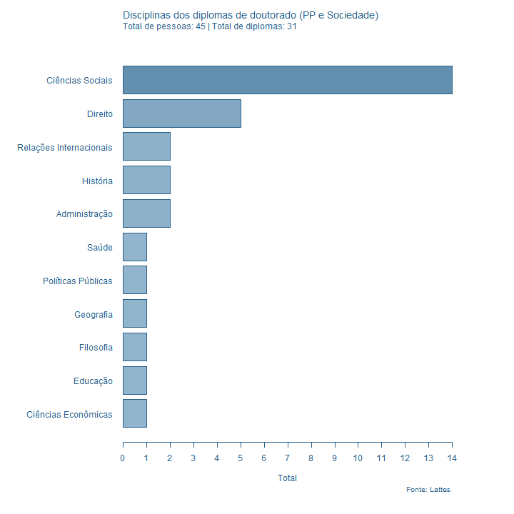

library(getLattes) # Para ler dados do lattes
library(stringr) # Para manipular strings
library(dplyr) # Para manipular dados
library(GeomContentAnalysis) # NLP
library(wordcloud) # wordcloud
library(magick) # Arrumar gráficos
library(genderBR) # Para descobrir gênerosRelatório do Lattes
Preparação dos dados
Pacotes utilizados
Leitura dos dados
files_lattes <- paste0("curriculos/", list.files("curriculos/"))
lista_curriculos <- lapply(files_lattes, xml2::read_xml)
with_doc <- which(unlist(lapply(lapply(lista_curriculos, xml2::xml_find_all, ".//FORMACAO-ACADEMICA-TITULACAO/DOUTORADO"),
length)) > 0)
# Função para realizar a leitura imediata dos dados em um data.frame
wrap_lattes <- function(arquivos, funcao_esc){
lista_curriculos <- lapply(arquivos, xml2::read_xml)
dados <- lapply(lista_curriculos, funcao_esc)
dados <- do.call(dplyr::bind_rows, dados)
return(dados)
}
# Função para pegar dados por pessoa (e não repetidos)
get_tabela_dados_pessoa <- function(dados, variavel, porc = FALSE){
lista_pessoa <- tapply(dados[[variavel]], dados$id, table)
tabela <- table(unlist(lapply(lista_pessoa, names)))
if (porc){
tabela <- tabela / length(unique(dados$id))
}
return(tabela)
}
dados_gerais <- wrap_lattes(files_lattes, "getDadosGerais")
atuacoes <- wrap_lattes(files_lattes, "getAtuacoesProfissionais")
mestrado <- wrap_lattes(files_lattes, "getFormacaoMestrado")
graduacao <- wrap_lattes(files_lattes, "getFormacaoGraduacao")
doutorado <- wrap_lattes(files_lattes[with_doc], "getFormacaoDoutorado")
min_col <- "#92B4CD"
max_col <- "#2A618A"NOTA: Em determinados momentos, os currículos podem ser arquivos corrompidos, os quais impediriam a leitura dos dados. Caso este problema exista, você poderá utilizar o script abaixo para detectar qual arquivo está atrapalhando a leitura dos dados:
for (i in with_doc){
print(paste0("Checando membro n. ", i))
a <- getFormacaoDoutorado(lista_curriculos[[i]])
print(paste0("Membro n. ", i, " não apresenta problemas"))
}graf_barras_abs <- function(tabela, nome_arquivo, titulo, subtitulo, nota_rodape,
largura = 720, altura = 720, main_col = "black", min_col = "#F1F1E8", x_lab = "", y_lab = ""){
colfunc <- colorRampPalette(c(min_col, main_col))
colors_pal <- colfunc(sum(tabela))
dev.new()
png(nome_arquivo, largura, altura)
par(mar = c(5, 4, 4, 2) + 0.1)
barplot(sort(tabela), beside = FALSE,
#main = "Número de passagens por tipos de instituições do serviço público",
yaxt = "n",
col = colors_pal[sort(tabela)],
ylim = c(0, max(tabela)),
xlab = x_lab,
ylab = y_lab,
col.axis = main_col,
col.lab = main_col,
border = main_col
)
mtext(side = 3, line = 3, at = 0, adj = 0, cex = 1.2, col = main_col,
titulo)
mtext(side = 3, line = 2, at = 0, adj = 0, cex = 1, col = main_col,
subtitulo)
axis(2, yaxp=c(0, max(tabela), max(tabela)), las=2,
col = main_col, col.axis = main_col)
mtext(nota_rodape, side = 1, line = 4, cex = 0.8, adj = 0.95,
col = main_col)
dev.off()
}
genero <- table(get_gender(str_extract(dados_gerais$nome_completo, "^\\w+")))
graf_barras_abs(genero, "genero_aprov.png",
paste0("Número de aprovados por gênero (", gsub("^(.+)/", "", getwd()), ")"),
paste0("Total de pessoas: ", length(files_lattes)),
"Fonte: Lattes",
main_col = max_col,
min_col = min_col)png
2 Títulos de TCCs, dissertações e teses
get_titulos_trabalhos <- function(vec){
vec <- vec[stringr::str_length(vec) > 10]
vec <- gsub(""", "", vec)
unique(vec)
}
titulos_teses <- c(get_titulos_trabalhos(graduacao$titulo_do_trabalho_de_conclusao_de_curso),
get_titulos_trabalhos(mestrado$titulo_da_dissertacao_tese),
get_titulos_trabalhos(doutorado$titulo_da_dissertacao_tese))
parepalavras <- c(tm::stopwords("pt"), "sobre", "and", "partir")
titulos_corpus <- GCA_get_corpus(titulos_teses, parepalavras)
titulos_freq <- setNames(apply(titulos_corpus, 2, sum), colnames(titulos_corpus))
titulos_freq <- sort(titulos_freq[titulos_freq > 2], T)
paste0(1:length(titulos_freq), ". ", names(titulos_freq), " (", titulos_freq, ")", collapse = "; ")[1] "1. brasil (21); 2. análise (16); 3. trabalho (8); 4. relações (8); 5. direito (8); 6. política (8); 7. social (8); 8. políticas (8); 9. construção (7); 10. estado (6); 11. estudo (5); 12. caso (5); 13. teoria (5); 14. hegemonia (5); 15. nacional (5); 16. economia (5); 17. brasileira (4); 18. conflito (4); 19. gênero (4); 20. produção (4); 21. internacionais (4); 22. jurídica (4); 23. norma (4); 24. cultura (4); 25. pública (4); 26. rio (4); 27. desenvolvimento (4); 28. mobilidade (4); 29. programa (3); 30. movimento (3); 31. sociais (3); 32. comunidades (3); 33. espírito (3); 34. norte (3); 35. santo (3); 36. busca (3); 37. sociologia (3); 38. cidade (3); 39. lei (3); 40. história (3); 41. cultural (3); 42. crítica (3); 43. constitucional (3); 44. responsabilidade (3); 45. representação (3); 46. perspectiva (3); 47. brasileiro (3); 48. indústria (3); 49. urbano (3); 50. mulheres (3); 51. mercado (3); 52. familiar (3); 53. socialização (3); 54. novas (3); 55. grupos (3); 56. democracia (3); 57. público (3); 58. brasileiras (3); 59. mundo (3); 60. limites (3)"dev.new()
png("wordcloud_titulos.png", 720, 720)
wordcloud(colnames(titulos_corpus), apply(titulos_corpus, 2, sum),
random.order = FALSE, random.color = FALSE,
colors = c("#00AFBB", "#E7B800", "#FC4E07"))
dev.off()png
2 image_read("wordcloud_titulos.png") %>%
image_trim(.) %>%
image_write(., "wordcloud_titulos.png")Vínculos de trabalho
atuacoes_rec <- atuacoes[grepl("^$|23$|24$", atuacoes$ano_fim), ]
# VINCULOS TOTAIS POR PESSOA
total_vinc <- sum(get_tabela_dados_pessoa(atuacoes_rec, "tipo_de_vinculo", FALSE)[c("CELETISTA", "SERVIDOR_PUBLICO")])
# Vamos contar os casos de vínculos repetidos (CLT & SP)
lista_pessoa <- tapply(atuacoes_rec[["tipo_de_vinculo"]], atuacoes_rec$id, table)
clt_serv_rep <- sum(unlist(lapply(lista_pessoa,
function(vec){any(grepl("CELETISTA", names(vec))) & any(grepl("SERVIDOR_PUBLICO", names(vec)))})))
# TOTAL_ASSAL = VINCULOS TOTAIS - VINCULOS REPETIDOS
total_vinc <- total_vinc - clt_serv_rep
# TABELA: N PESSOAS VINCULADAS RECENTEMENTE A UM TIPO DE CONTRATAÇÃO
tabela <- table(unlist(lapply(lista_pessoa, names)))
a <- c(tabela[c("CELETISTA", "SERVIDOR_PUBLICO")], "ASSALARIADO" = total_vinc) / length(files_lattes)
a <- rbind(a, 1 - a)
graf_barras_prop <- function(tabela, nome_arquivo, titulo, subtitulo, nota_rodape,
largura = 720, altura = 720, main_col = "black", min_col = "#F1F1E8"){
dev.new()
png(nome_arquivo, largura, altura)
par(mar = c(7, 4, 5, 3))
p <- barplot(tabela, beside = FALSE, col = rep(c(main_col, min_col), ncol(tabela)),
col.axis = main_col, col.lab = main_col, yaxt = "n",
border = main_col)
# main = "Proporção de aprovados com experiência profissional recente")
axis(2, las=2,
col = main_col, col.axis = main_col)
altura <- ifelse(tabela[1, ] > 0.45 & tabela[1, ] < 0.55, tabela[1, ] + 0.03, 0.5)
text(p, altura, paste0(round(tabela[1, ]*100, 2), "%"), cex = 1.5, col = ifelse(tabela[1, ] > 0.55, min_col, main_col))
mtext(side=3, line=3, at=0.1, adj=0, cex=1.2, titulo, col = main_col)
# "Proporção de aprovados com experiência profissional recente")
mtext(side=3, line=2, at=0.1, adj=0, cex=1, subtitulo, col = main_col)
# paste0("Total de pessoas: ", length(files_lattes), " | Total de assalariados: ", total_vinc))
mtext(side = 1, line = 4, cex = 0.8, adj = 0.95, nota_rodape, col = main_col)
# "Fonte: Lattes")
dev.off()
}
graf_barras_prop(a, "atuacoes_rec_prop.png",
paste0("Proporção de aprovados com experiência profissional recente (", gsub("^(.+)/", "", getwd()), ")"),
paste0("Total de pessoas: ", length(files_lattes), " | Total de assalariados: ", total_vinc),
"Fonte: Lattes",
main_col = max_col,
min_col = min_col)png
2 
instituicoes <- get_tabela_dados_pessoa(atuacoes, "nome_instituicao", FALSE)
sort(instituicoes, T)[1:10]
Universidade de Brasília
13
Universidade de São Paulo
7
Universidade do Estado do Rio de Janeiro
6
Universidade Federal do Rio de Janeiro
5
Fundação Getúlio Vargas
4
Universidade Federal de Minas Gerais
4
Conselho Nacional de Desenvolvimento Científico e Tecnológico
3
Coordenação de Aperfeiçoamento de Pessoal de Nível Superior
3
Fundação Centro de Ciências e Educação Superior à Distância do Estado do RJ
3
Fundação Instituto Brasileiro de Geografia e Estatística
3 serv_pub <- get_tabela_dados_pessoa(subset(atuacoes, tipo_de_vinculo == "SERVIDOR_PUBLICO"), "nome_instituicao", FALSE)
sort(serv_pub, T)[1:10]
Universidade de Brasília
3
Câmara dos Deputados
2
Fundação Instituto Brasileiro de Geografia e Estatística
2
Instituto do Patrimônio Histórico e Artístico Nacional
2
Ministério do Trabalho e Emprego
2
Universidade Federal de Juiz de Fora
2
Assembleia Legislativa do Estado do Piauí
1
Centro de Ensino Médio 03 de Taguatinga
1
Corpo de Bombeiros Militar do Estado do Rio Grande do Norte
1
Escola estadual Azarias Ribeiro
1 inst_serv_pub <- c(Universidade = sum(serv_pub[grepl("universidade|faculdade", names(serv_pub), ignore.case = TRUE)]),
Executivo = sum(serv_pub[grepl("secretaria|minist.rio|prefeitura|governo", names(serv_pub), ignore.case = TRUE)]),
Legislativo = sum(serv_pub[grepl("c.mara|senado|legislat", names(serv_pub), ignore.case = TRUE)]),
Escola = sum(serv_pub[grepl("escola|ensino", names(serv_pub), ignore.case = TRUE)]),
Institutos = sum(serv_pub[grepl("instituto", names(serv_pub), ignore.case = TRUE)]))
sum(serv_pub) / tabela["SERVIDOR_PUBLICO"] # Média de instituições no serviço públicoSERVIDOR_PUBLICO
1.846154 graf_barras_abs_horiz <- function(tabela, nome_arquivo, titulo, subtitulo, nota_rodape,
largura = 720, altura = 720, main_col = "black", min_col = "#F1F1E8",
horiz = FALSE, x_lab = "", y_lab = ""){
colfunc <- colorRampPalette(c(min_col, main_col))
colors_pal <- colfunc(sum(tabela))
dev.new()
png(nome_arquivo, largura, altura)
par(mar = c(5, 12, 4, 2))
barplot(sort(tabela), beside = FALSE,
#main = "Número de passagens por tipos de instituições do serviço público",
xaxt = "n",
col = colors_pal[sort(tabela)],
ylim = c(0, max(tabela)),
col.axis = main_col,
col.lab = main_col,
border = main_col,
xlab = x_lab,
las = 1,
horiz = TRUE
)
mtext(side = 3, line = 3, at = 0, adj = 0, cex = 1.2, col = main_col,
titulo)
mtext(side = 3, line = 2, at = 0, adj = 0, cex = 1, col = main_col,
subtitulo)
axis(1, xaxp=c(0, max(tabela), max(tabela)), las=1,
col = main_col, col.axis = main_col)
mtext(nota_rodape, side = 1, line = 4, cex = 0.8, adj = 0.95,
col = main_col)
dev.off()
}
graf_barras_abs(inst_serv_pub, "inst_serv_pub.png",
paste0("Número de passagens por instituições do serviço público (", gsub("^(.+)/", "", getwd()), ")"),
paste0("Total de servidores: ", tabela["SERVIDOR_PUBLICO"], " | Total de cargos: ", sum(inst_serv_pub)),
"Fonte: Lattes",
x_lab = "Estados",
y_lab = "Total",
main_col = max_col,
min_col = min_col)png
2 dev.off()pdf
3 
Formação
Instituições e estados de formação
uni_estado_dict <- c(`Universidade Federal Fluminense` = "RJ",
`Universidade Federal do Rio Grande do Sul` = "RS",
`Universidade Federal do Rio de Janeiro` = "RJ",
`Universidade Federal do Piauí` = "PI",
`Universidade Federal do Paraná` = "PR",
`Universidade Federal do Maranhão` = "MA",
`Universidade Federal de Sergipe` = "SE",
`Universidade Federal de São João Del-Rei` = "MG",
`Universidade Federal do Ceará` = "CE",
`Universidade Federal de Minas Gerais` = "MG",
`Universidade Federal de Juiz de Fora` = "MG",
`Universidade Federal da Bahia` = "BA",
`Universidade Federal do Espírito Santo` = "ES",
`Universidade do Estado do Rio de Janeiro` = "RJ",
`Universidade de São Paulo` = "SP",
`Universidade de Brasília` = "DF",
`Pontifícia Universidade Católica do Rio Janeiro` = "RJ",
`Pontifícia Universidade Católica de São Paulo` = "SP",
`Pontifícia Universidade Católica de Minas Gerais` = "MG",
`Pontifícia Universidade Católica do Rio de Janeiro` = "RJ",
`Faculdades Integradas de Vitória` = "ES",
`Graduate Institute of International and Development Studies` = "EXT",
`Instituto Universitário de Pesquisas do Rio de Janeiro` = "RJ",
`Pontifícia Universidade Católica do Paraná` = "PR",
`Universidade Federal Fluminense` = "RJ",
`Universidade Federal da Integração Latino-America` = "PR",
`Universidade Federal de Pernambuco` = "PE",
`Universidade Estadual do Rio Grande do Norte` = "RN",
`Universidade Federal de Sergipe` = "SE",
`Universidade Federal de Viçosa` = "MG",
`Fundação João Pinheiro` = "MG",
`Fundação Oswaldo Cruz` = "RJ",
`Universität Luzern` = "EXT",
`Universidade Federal do Estado do Rio de Janeiro` = "RJ",
`Universidade Estadual de Montes Claros` = "MG",
`Universidade de Coimbra` = "EXT",
`Fundação Getúlio Vargas` = "SP")
mest_tab <- get_tabela_dados_pessoa(mestrado, "nome_instituicao")
sort(mest_tab, T)
Universidade de Brasília
9
Universidade de São Paulo
8
Instituto Universitário de Pesquisas do Rio de Janeiro
4
Universidade Federal Fluminense
3
Universidade Federal da Bahia
2
Universidade Federal de Pernambuco
2
Universidade Federal do Rio de Janeiro
2
Faculdade de Economia, Administração e Contabilidade - USP
1
Fundação João Pinheiro
1
Fundação Oswaldo Cruz
1
Graduate Institute of International and Development Studies
1
Pontifícia Universidade Católica do Paraná
1
Pontifícia Universidade Católica do Rio de Janeiro
1
Universidade do Estado do Rio de Janeiro
1
Universidade Estadual do Rio Grande do Norte
1
Universidade Federal da Integração Latino-Americana
1
Universidade Federal de Juiz de Fora
1
Universidade Federal de Sergipe
1
Universidade Federal de Viçosa
1
Universidade Federal do Espírito Santo
1
Universidade Federal do Maranhão
1
Universidade Federal do Paraná
1
Universidade Federal do Rio Grande do Sul
1 lista_pessoa <- tapply(mestrado[["nome_instituicao"]], mestrado$id, table)
mest_vec <- unlist(lapply(lista_pessoa, names))
mest_vec <- gsub("Faculdade de Economia, Administração e Contabilidade - USP",
"Universidade de São Paulo", mest_vec)
mest_est <- table(uni_estado_dict[unlist(lapply(lista_pessoa, names))])
mest_est
BA DF ES EXT MA MG PE PR RJ RN RS SE SP
2 9 1 1 1 3 2 2 12 1 1 1 8 grad_tab <- get_tabela_dados_pessoa(graduacao, "nome_instituicao")
grad_est <- table(uni_estado_dict[graduacao$nome_instituicao])
lista_pessoa <- tapply(doutorado$id, doutorado$nome_instituicao, table)
dout_tab <- unlist(lapply(lista_pessoa, length))
dout_vec <- unlist(mapply(rep, names(dout_tab), dout_tab))
dout_est <- table(uni_estado_dict[dout_vec])
form_est <- bind_rows(grad_est, mest_est, dout_est)
form_est_tab <- apply(form_est, 2, sum, na.rm = TRUE)
form_est <- data.frame(Estado = names(form_est_tab), Total = form_est_tab)
form_est <- arrange(form_est, Total)
graf_barras_abs(form_est_tab, "diplomas_estados.png",
paste0("Estados de origem dos diplomas (", gsub("^(.+)/", "", getwd()), ")"),
paste0("Total de pessoas: ", length(files_lattes), " | Total de formações: ", sum(form_est_tab)),
"Fonte: Lattes",
x_lab = "Estado",
y_lab = "Total",
main_col = max_col,
min_col = min_col
)png
2 dev.off()pdf
3 
Formações totais
a <- c(Mestrado = sum(mest_tab) / length(files_lattes),
Doutorado = sum(dout_tab) / length(files_lattes))
a <- ifelse(a > 1, 1, a)
prop_table <- rbind(a, 1 - a)
graf_barras_prop(prop_table, "prop_dip_posgrad.png",
paste0("Proporção de aprovados com diplomas de pós-graduação (", gsub("^(.+)/", "", getwd()), ")"),
paste0("Total de pessoas: ", length(files_lattes), " | Total de diplomas de pós-graduação: ", sum(mest_tab) + sum(dout_tab)),
"Fonte: Lattes",
main_col = max_col,
min_col = min_col)png
2 
Cursos e disciplinas
disc_area_dict <- c(Direito = "Direito", # COMPLETAR ESTE DICIONÁRIO!
`Ciências Sociais` = "Ciências Sociais",
`Relações Internacionais` = "Relações Internacionais",
Administração = "Administração",
História = "História",
Filosofia = "Filosofia",
`Ciências Econômicas` = "Ciências Econômicas",
Geografia = "Geografia",
Pedagogia = "Educação",
`Ciência Política` = "Ciências Sociais",
Sociologia = "Ciências Sociais",
`Gestão do Agronegócio` = "Administração",
`Gestão de Políticas Públicas` = "Administração",
`Jornalismo` = "Comunicação",
`Comunicação Social` = "Comunicação",
`Programa Especial de Formação de Docente` = "Educação",
`Economia da Indústria e da Tecnologia` = "Ciências Econômicas",
`Direitos Humanos` = "Direito",
`Integração da América Latina` = "Relações Internacionais",
`International Affairs` = "Relações Internacionais",
`Planejamento e Dinâmicas Territoriais no Semiárido` = "Geografia",
`Política Social` = "Políticas Públicas",
`POLÍTICAS PÚBLICAS E DESENVOLVIMENTO` = "Políticas Públicas",
`Processos de Desenvolvimento Humano e Saúde` = "Saúde",
`Saúde Pública` = "Saúde",
`Teoria Econômica` = "Ciências Econômicas",
`Sociologia e Antropologia` = "Ciências Sociais",
`Direito Constitucional` = "Direito",
`Direito e Instituições do Sistema de Justiça` = "Direito",
`Desenvolvimento Sustentável` = "Ciências Econômicas",
`Cultura e Sociedade` = "Ciências Sociais",
`Antropologia Social` = "Ciências Sociais",
`Administração Pública` = "Administração",
`Administração Pública e Governo` = "Administração",
`Estudos Estratégicos Internacionais` = "Relações Internacionais",
`Direito Economico e Financeiro` = "Direito",
`Democracia no Século XXI` = "Ciências Sociais",
`Direitos Humanos e Cidadania` = "Direito",
`Economia da Indústria e da Tecnologia` = "Ciências Econômicas")
grad_curso <- graduacao$nome_curso
grad_curso <- gsub("Licenciatura em |Bacharelado em | - (.*)$| \\((.*)$",
"", grad_curso)
grad_curso <- gsub("Socias", "Sociais", grad_curso) %>% gsub("Ciências Políticas", "Ciência Política", .) %>%
gsub("filosofia", "Filosofia", .) %>% gsub("Economicas", "Econômicas", .) %>%
gsub("Ciências Sociais e Políticas", "Ciências Sociais", .) %>% gsub("Economia", "Ciências Econômicas", .)
tab_grad_curso <- table(grad_curso)
grad_curso2 <- ifelse(is.na(disc_area_dict[grad_curso]), grad_curso, disc_area_dict[grad_curso])
tab_grad_curso2 <- table(grad_curso2)
tab_grad_curso2grad_curso2
Administração Ciências Biológicas Ciências Econômicas
3 2 4
Ciências Sociais Comunicação Direito
19 3 10
Educação Filosofia Geografia
1 2 4
História Matemática Psicologia
6 1 1
Relações Internacionais
5 colfunc <- colorRampPalette(c(min_col, max_col))
colors_pal <- colfunc(sum(tab_grad_curso2))
graf_barras_abs_horiz(tab_grad_curso2, "diplomas_cursos_grad2.png",
paste0("Disciplinas dos diplomas de graduação (", gsub("^(.+)/", "", getwd()), ")"),
paste0("Total de pessoas: ", length(files_lattes), " | Total de diplomas: ", sum(tab_grad_curso2)),
"Fonte: Lattes",
x_lab = "Total"
)png
2 dev.new()
png("diplomas_cursos_grad.png", 720, 720)
par(mar=c(7, 12, 5, 6))
barplot(sort(tab_grad_curso2),
horiz = T,
las = 1,
xlim = c(0, max(tab_grad_curso2)),
xaxt = "n",
col = colors_pal[sort(tab_grad_curso2)],
col.lab = max_col,
col.axis = max_col,
border = max_col,
# main = "Disciplinas dos diplomas de mestuação dos aprovados no concurso do IPEA (PP e Sociedade)",
# sub = "Fonte: Lattes",
xlab = "Total")
mtext(side=3, line=3, at=0, adj=0, cex=1.2,
paste0("Disciplinas dos diplomas de graduação (", gsub("^(.+)/", "", getwd()), ")"),
col = max_col)
mtext(side=3, line=2, at=0, adj=0, cex=1,
paste0("Total de pessoas: ", length(files_lattes), " | Total de diplomas: ", sum(tab_grad_curso2)),
col = max_col)
mtext("Fonte: Lattes", side = 1, line = 4, cex = 0.8, adj = 1, col = max_col)
axis(1, xaxp=c(0, max(tab_grad_curso2), max(tab_grad_curso2)), las = 1,
col = max_col, col.axis = max_col)
dev.off()png
2 
#| label: mest-form
mest_curso <- mestrado$nome_curso
lista_pessoa <- tapply(mestrado[["nome_curso"]], mestrado$id, table)
mest_curso <- unlist(lapply(lista_pessoa, names))
mest_curso <- gsub(" - (.*)$| \\((.*)$", "", mest_curso)
mest_curso2 <- disc_area_dict[mest_curso]
tab_mest_curso2 <- table(mest_curso2)
sort(tab_mest_curso2, T)mest_curso2
Ciências Sociais Direito Relações Internacionais
19 7 4
Ciências Econômicas História Administração
3 3 2
Geografia Políticas Públicas Saúde
2 2 2
Filosofia
1 colfunc <- colorRampPalette(c(min_col, max_col))
colors_pal <- colfunc(sum(tab_mest_curso2))
dev.new()
png("diplomas_cursos_mest.png", 720, 720)
par(mar=c(7, 12, 5, 6))
barplot(sort(tab_mest_curso2),
horiz = T,
las = 1,
xlim = c(0, max(tab_mest_curso2)),
xaxt = "n",
col = colors_pal[sort(tab_mest_curso2)],
# main = "Disciplinas dos diplomas de mestuação dos aprovados no concurso do IPEA (PP e Sociedade)",
# sub = "Fonte: Lattes",
xlab = "Total",
col.lab = max_col,
col.axis = max_col,
border = max_col)
mtext(side=3, line=3, at=0, adj=0, cex=1.2,
paste0("Disciplinas dos diplomas de mestrado (", gsub("^(.+)/", "", getwd()), ")"), col = max_col)
mtext(side=3, line=2, at=0, adj=0, cex=1,
paste0("Total de pessoas: ", length(files_lattes), " | Total de diplomas: ", sum(tab_mest_curso2)), col = max_col)
mtext("Fonte: Lattes.", side = 1, line = 4, cex = 0.8, adj = 1, col = max_col)
axis(1, xaxp=c(0, max(tab_mest_curso2), max(tab_mest_curso2)), las = 1, col = max_col, col.axis = max_col)
dev.off()png
2 
#| label: dout-form
dout_curso <- doutorado$nome_curso
lista_pessoa <- tapply(doutorado[["nome_curso"]], doutorado$id, table)
dout_curso <- unlist(lapply(lista_pessoa, names))
dout_curso <- gsub("Doutorado em | - (.*)$| \\((.*)$|:(.*)$", "", dout_curso) %>% gsub(" ", " ", .)
dout_curso2 <- ifelse(is.na(disc_area_dict[dout_curso]), dout_curso, disc_area_dict[dout_curso])
tab_dout_curso2 <- table(dout_curso2)
sort(tab_dout_curso2, T)dout_curso2
Ciências Sociais Direito Administração
14 5 2
História Relações Internacionais Ciências Econômicas
2 2 1
Educação Filosofia Geografia
1 1 1
Políticas Públicas Saúde
1 1 colfunc <- colorRampPalette(c(min_col, max_col))
colors_pal <- colfunc(sum(tab_dout_curso2))
dev.new()
png("diplomas_cursos_dout.png", 720, 720)
par(mar=c(7, 12, 5, 6))
barplot(sort(tab_dout_curso2), horiz = T, las = 1,
xlim = c(0, max(tab_dout_curso2)),
xaxt = "n",
col = colors_pal[sort(tab_dout_curso2)],
# main = "Disciplinas dos diplomas de doutuação dos aprovados no concurso do IPEA (PP e Sociedade)",
# sub = "Fonte: Lattes",
xlab = "Total",
col.lab = max_col,
col.axis = max_col,
border = max_col)
mtext(side=3, line=3, at=0, adj=0, cex=1.2,
paste0("Disciplinas dos diplomas de doutorado (", gsub("^(.+)/", "", getwd()), ")"), col = max_col)
mtext(side=3, line=2, at=0, adj=0, cex = 1,
paste0("Total de pessoas: ", length(files_lattes), " | Total de diplomas: ", sum(tab_dout_curso2)), col = max_col)
mtext("Fonte: Lattes.", side = 1, line = 4, cex = 0.8, adj = 1, col = max_col)
axis(1, xaxp=c(0, max(tab_dout_curso2), max(tab_dout_curso2)), las=1, col = max_col, col.axis = max_col)
dev.off()png
2 